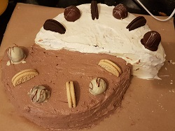
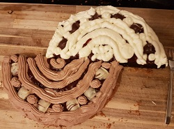
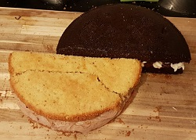
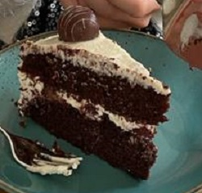
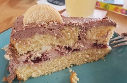

zurück
Schwarz-Weiß-Torte
Zubereitungszeit:

- Schoko-Ölkuchen und VanillekuchenBoden backen, auskühlen lassen und jeweils halbieren
- Kirschkompott, Oreopralinen sowie Eindeckcreme vorbereiten
- Weißen Boden abwechselnd ringförmig mit Kirschkompott und Schokocreme füllen, weiße
Oreopralinen halbieren und darauf verteilen
- Schoko-Boden abwechselnd ringförmig mit Kirschkompott und Vanillecreme füllen, dunkle
Oreopralinen halbieren und darauf verteilen
- Jeweils die andere Kuchenbodenhälfte darauf geben, einstreichen mit restlicher Creme in der jeweiligen Farbe
- Abwechselnd Oreopralinen und halbe Oreos auf der Torte verteilen



